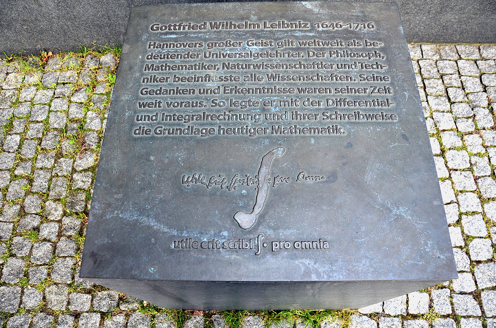

by Jackey Yang
July 1, 1646 - November 14, 1716
Gottfried Wilhelm Leibniz was a German mathematician renown as a prodigy for his works in philosophy, engineering, physics, law, and politics, among other things. He was born in Saxony, Germany on July 1, 1646. His father and mother were both prominent figures in the city as the former was a professor of moral philosophy and the latter being the daughter of a successful local lawyer. Unfortunately, when Leibniz was only 6, his father died.
Despite this, Leibniz was considered a prodigy in his childhood, studying Greek works and Latin at the young age of 12. At the age of 14, he studied philosophy, math, and law at the University of Leipzig; when he applied for a doctorate, he was denied due to his age. However, after Leibniz presented an incredible thesis to the University of Altdorf, the professors promptly awarded him a doctorate and professorship.
Leibniz’s life speaks in ways not many can, and his contributions lay the foundation for modern mathematics – or rather, the world as a whole – in which we carry on today. At the age of 70, Gottfried Wilhelm Leibniz died in Hanover on November 14, 1716.
